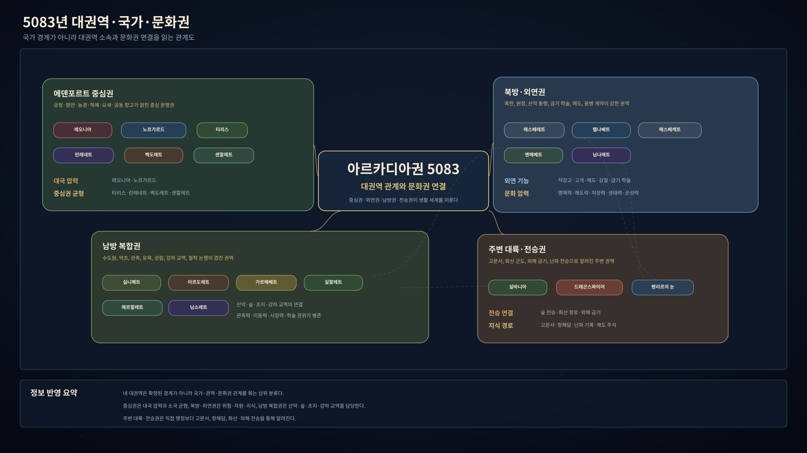
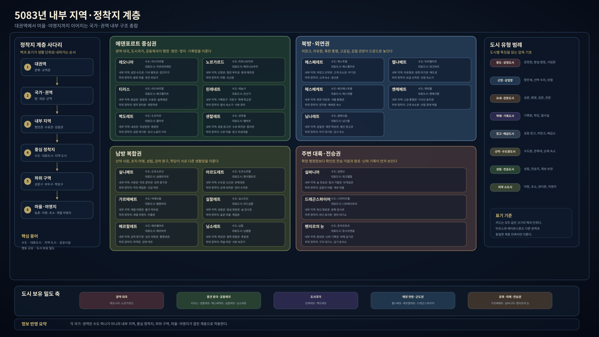
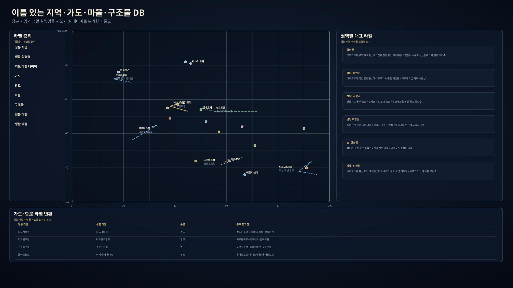
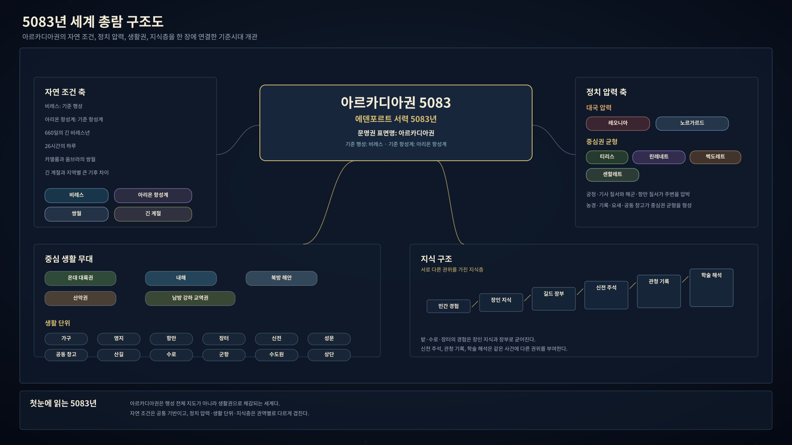
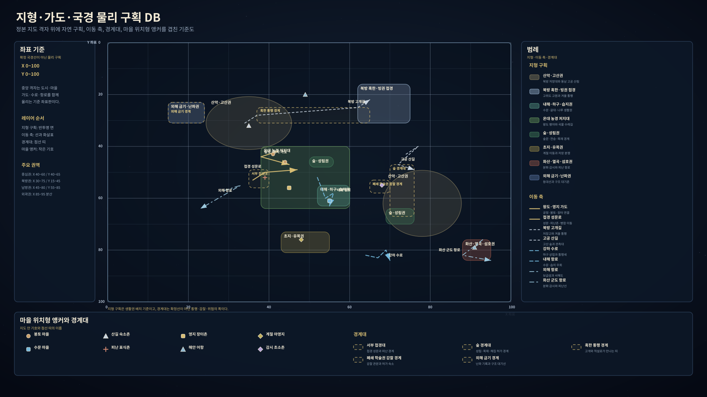
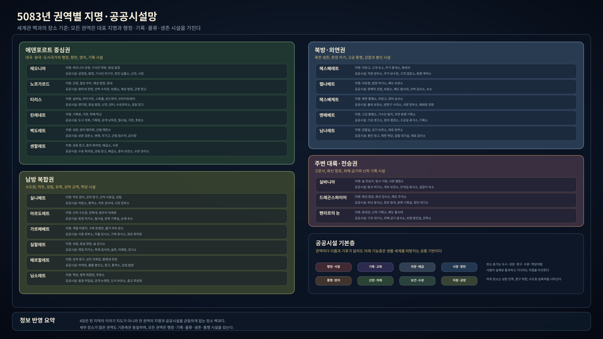

권역 선택
먼저 출발할 곳을 고르세요.
같은 은화도 항구와 산길에서 값이 다르고, 같은 소문도 왕도와 숲 경계에서 다르게 들립니다. 카드를 누르면 그 땅의 첫 풍경과 사람들의 걱정거리가 열립니다.



세계관 쉽게 읽기
여행 전에 알아두면 좋은 이야기입니다.
아래 내용은 비레스의 길 위에서 자주 마주칠 이야기입니다. 왕궁 문서처럼 차갑게 정리한 글이 아니라, 여관 탁자와 항구 창구와 신전 계단에서 들을 법한 말로 묶었습니다.



플레이 시작점
이런 사람으로 들어가면 바로 장면이 열립니다.
⌁길 위의 여행자여관, 검문소, 통행세, 길잡이 소문을 먼저 만납니다.
✍상인이나 서기장부, 봉인 끈, 환전, 납품 분쟁에 쉽게 접근합니다.
⚔호위나 용병성문, 병영, 무기 보관, 징발 소문을 자주 듣습니다.
⌂피난민이나 정착민이름패, 배급 순서, 공동 창고, 귀향 논쟁에 얽힙니다.
그림으로 보기
지도를 보고, 그다음 풍경을 봅니다.
도식은 길과 경계를 잡아주고, 설정화는 그 길 위에서 만나는 빛과 공기를 보여줍니다. 큰 묶음 그림은 흐름을 볼 때 쓰고, 도시와 마을은 한 장씩 넘겨 보도록 따로 정리했습니다.